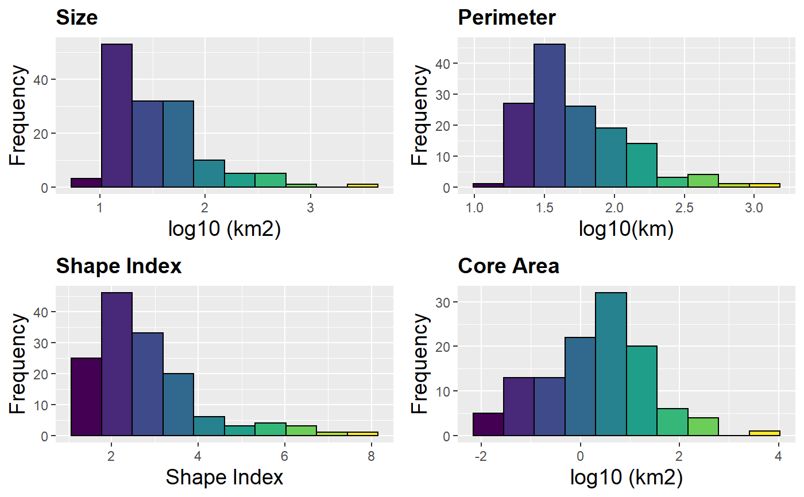

Calculate patch and landscape statistics
MK_Fragmentation(patches, edge_distance = 500, min_patch_area = 100, landscape_area = NULL, area_unit = "km2", perimeter_unit = "km", plot = FALSE, write = NULL)
| patches | Object of class sf, sfc, sfg or SpatialPolygons with individual patches. The shapefile must be in a projected coordinate system. |
|---|---|
| edge_distance | Numeric. Distance to edge in meters. Default equal 500 m (Haddad et al. 2015) |
| min_patch_area | Numeric. Minimum patch area. Default equal 100 km2(Haddad et al. 2015) |
| landscape_area | Numeric. Total landscape area in km2 (optional). If NULL the total patch area will be used. |
| area_unit | character. You can set an area unit (e.g., "km2", "cm2", "m2", "ha"; see Makurhini::unit_convert). Default equal to square kilometers "km2". |
| perimeter_unit | character. You can set a perimeter unit (e.g., "km", "cm", "m", "ha"; see Makurhini::unit_convert). Default equal to kilometers "km". |
| plot | Logical. Basic histograms and core area - edge map. |
| write | Character. Write the following outputs: Fragmentation.csv, Fragmentation.shp and plots. It's necessary to specify the path and prefix, for example: "C:/Folder/Fragmentation". |
Patch and landscape statistics:
1) Patches Area in square kilometers.
2) Number patches.
3) Mean size of patches.
4) Number of patches smaller than 100 km2 or another minimum patch area.
5) Area in square kilometers of patches smaller than 100 km2 or another minimum patch area.
6) Total edge.
7) Edge density.
8) Total core area (km2; considering a distance to edge of 500 m).
9) Total core area.
10) Core percent.
11) Edge percent.
12) Cority index. It is a measure of fragmentation with respect to a distance from the core area of 500 m (Haddad et al., 2015), where a value of 1 indicates a landscape without fragmentation.
13) Shape Index. A simple shape metric that takes values from 1 (perfectly compact) to infinity is derived by dividing the perimeter by the perimeter of a circle of the same area.
14) Fractal dimension.
15) Effective Mesh Size.
McGarigal, K., S. A. Cushman, M. C. Neel, and E. Ene. 2002. FRAGSTATS: Spatial Pattern Analysis Program for Categorical Maps. Computer software program produced by the authors at the University of Massachusetts, Amherst. Available at the following web site:
www.umass.edu/landeco/research/fragstats/fragstats.html.
Haddad et al. (2015). Science Advances 1(2):e1500052. DOI: 10.1126/sciadv.1500052.
#> [1] 142fragmentation <- MK_Fragmentation(patches = vegetation_patches, edge_distance = 500, plot = TRUE)#Table fragmentation$`Summary landscape metrics (Viewer Panel)` #Shapefile fragmentation$`Patch statistics shapefile`#> Simple feature collection with 142 features and 9 fields #> geometry type: POLYGON #> dimension: XY #> bbox: xmin: 3340120 ymin: 322869.6 xmax: 3739484 ymax: 696540.5 #> epsg (SRID): NA #> proj4string: +proj=lcc +lat_1=17.5 +lat_2=29.5 +lat_0=12 +lon_0=-102 +x_0=2500000 +y_0=0 +datum=WGS84 +units=m +no_defs #> First 10 features: #> id Area CA CAPercent Perimeter EdgePercent PARA ShapeIndex FRAC #> 1 1 4195.569 3541.381 84.408 1412.046 15.592 2.971 6.150 1.407 #> 2 2 60.223 11.941 19.828 167.982 80.172 0.359 6.106 1.824 #> 3 3 48.866 6.210 12.708 127.049 87.292 0.385 5.127 1.778 #> 4 4 15.188 7.421 48.861 18.536 51.139 0.819 1.342 1.127 #> 5 5 33.272 13.088 39.336 55.038 60.664 0.605 2.692 1.496 #> 6 6 53.134 11.356 21.372 111.123 78.628 0.478 4.300 1.674 #> 7 7 83.842 31.887 38.032 121.275 61.968 0.691 3.736 1.541 #> 8 8 17.387 4.519 25.991 33.798 74.009 0.514 2.287 1.495 #> 9 9 18.037 7.569 41.964 25.755 58.036 0.700 1.711 1.288 #> 10 10 36.336 19.358 53.275 36.972 46.725 0.983 1.730 1.238 #> geometry #> 1 POLYGON ((3676911 589967.3,... #> 2 POLYGON ((3558044 696202.5,... #> 3 POLYGON ((3569169 687776.4,... #> 4 POLYGON ((3547317 685713.2,... #> 5 POLYGON ((3567471 684357.4,... #> 6 POLYGON ((3590569 672451.7,... #> 7 POLYGON ((3570789 670959.4,... #> 8 POLYGON ((3440118 666273.2,... #> 9 POLYGON ((3451637 671232.4,... #> 10 POLYGON ((3444396 671675.7,...